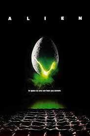

Dispnible en:
plutoTVAlien
mini resumen:un grupo de trabajadores astronautas criogenizados estaban llendo hacia la tierra, al llevar mucho cargamento de minerales. de un momento a otro despiertan , pensado que estan de buelta, por fin a casa , para tiempo despues ver que no, estaban llendo rumbo a una señal se auxilio lejana, donde encontrarian una nave desolada de vida, con pasillos muy grandes, pero, encontraron algo interesante, un huevo, con vida.
Créditos y reparto
| direccion y guion | Ridley Scott |
| produccion | Gordon Carroll, Gordon Carroll,Walter Hill, |
| Historia en | Dan O'Bannon, Ronald Shusett |
| musica | Jerry Goldsmith |
| fotografia | Derek Vanlint |
| montaje | Terry Rawlings, Peter Weatherley, David Crowther (versión del director) |
| pais | Reino Unido, Estados Unidos |
| Fecha de estreno | 25 de mayo de 1979 (Londres) |
| genero | Terror,Ciencia Ficcion |
| duracion | 116 minutos (original)/ 115 minutos (versión del director, 2003) |
| clasificacion | +16 (en la mayoria de los paises) |